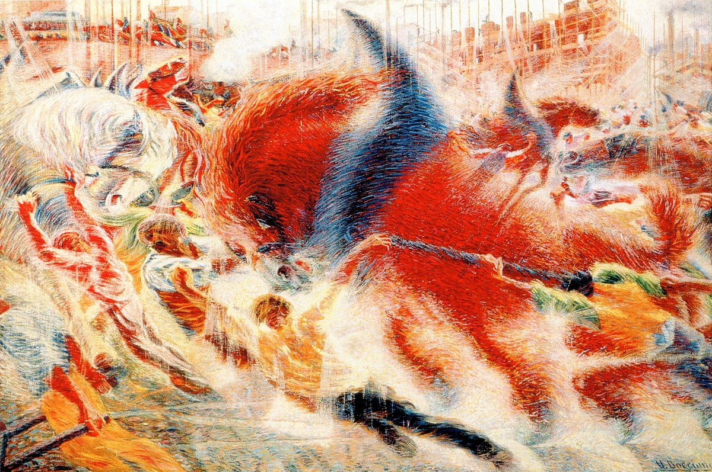

«Le sedici persone che avete intorno a voi in un tram che corre, sono una, dieci, quattro, tre; stanno ferme e si muovono; vanno e vengono, rimbalzano sulla strada, divorate da una zona di sole, indi tornano a sedersi, simboli persistenti della vibrazione universale.»
Umberto Boccioni, Manifesto tecnico della pittura futurista, 11 aprile 1910